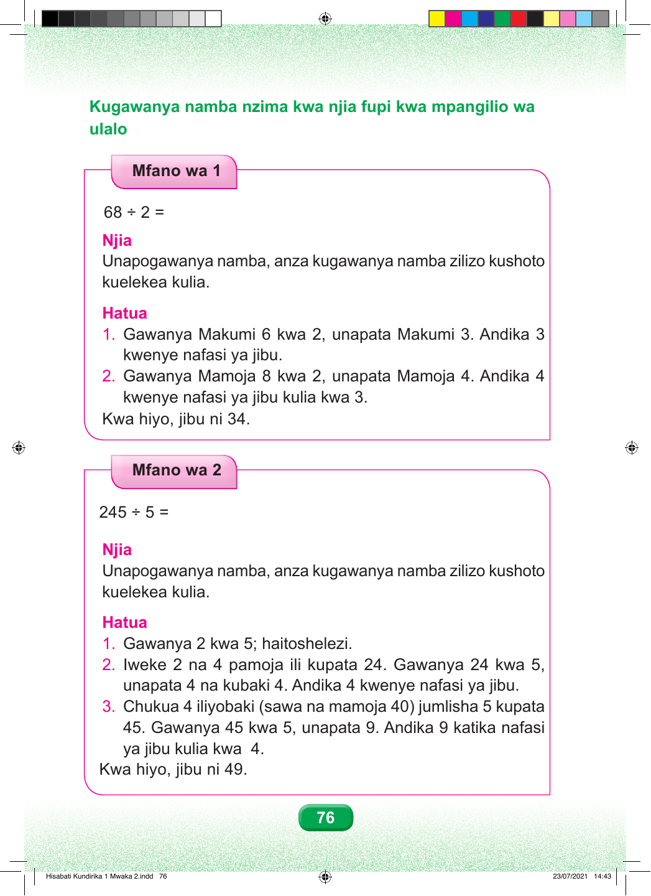

Kugawanya namba nzima kwa njia fupi kwa mpangilio wa ulalo Mfano wa 1 68 ÷ 2 = Njia Unapogawanya namba, anza kugawanya namba zilizo kushoto kuelekea kulia. Hatua 1. Gawanya Makumi 6 kwa 2, unapata Makumi 3. Andika 3 kwenye nafasi ya jibu. 2. Gawanya Mamoja 8 kwa 2, unapata Mamoja 4. Andika 4 kwenye nafasi ya jibu kulia kwa 3. Kwa hiyo, jibu ni 34. Mfano wa 2 245 ÷ 5 = Njia Unapogawanya namba, anza kugawanya namba zilizo kushoto kuelekea kulia. Hatua 1. Gawanya 2 kwa 5; haitoshelezi. 2. Iweke 2 na 4 pamoja ili kupata 24. Gawanya 24 kwa 5, unapata 4 na kubaki 4. Andika 4 kwenye nafasi ya jibu. 3. Chukua 4 iliyobaki (sawa na mamoja 40) jumlisha 5 kupata 45. Gawanya 45 kwa 5, unapata 9. Andika 9 katika nafasi ya jibu kulia kwa 4. Kwa hiyo, jibu ni 49. 76 Hisabati Kundirika 1 Mwaka 2.indd 76 23/07/2021 14:43